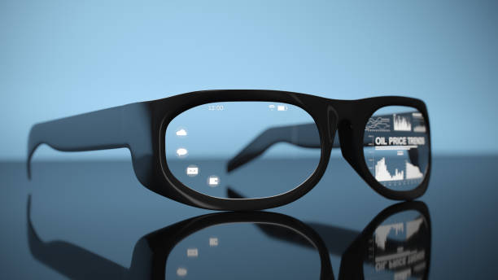

¿Que son las gafas nimo?
Las gafas Nimo son gafas con una pantalla que muestra datos, gráficos, información... Esta información se proyecta en el mundo real. Por lo que hablamos de gafas inteligentes.
Se puede resumir en que su función es sustituir el monitor de tu ordenador
Se coloca en la cabeza y proporciona seis pantallas virtuales que te permiten trabajar cuando te encuentras lejos de tu escritorio. Se puede conectar a un teclado, por lo que se podría decir que es un ordenador portatil, pero mucho mas ligero.
Historia
Nimo Planet es una prometedora empresa emergente de California dirigida por Rohildev Nattukallingal, que ha creado un producto relativamente simple, realista y asequible que se postula como una alternativa sólida a los dispositivos portátiles.
¿Para que podemos usar las gafas nimo?
Estas gafas son muy utiles para el dia a dia, algunas de las funciones que las puedes dar son por ejemplo:
- Recordar tareas, hacer fotos y videos, reproducir música, seguir partituras en un concierto ... Tiene muchas mas utilidades, pero según la opinión de los creadores el mejor uso que se le puede dar a las gafas es en el entorno laboral, ya que les ayuda a desempeñar sus tareas de la mejor forma posible.
Curiosidades
Las personas con problemas de visión a corta distancia no experimentarán dificultades, porque Nimo trabaja con gafas graduadas normales, por lo que podras usarlas con total normalidad y sin ningun tipo de dificultad
Nimo resulta atractivo debido a su enfoque selectivo. Estas gafas no están creadas para abarcar todas las aplicaciones posibles, sino que están diseñadas para ejecutar aplicaciones de procesamiento de texto y gestión de proyectos.